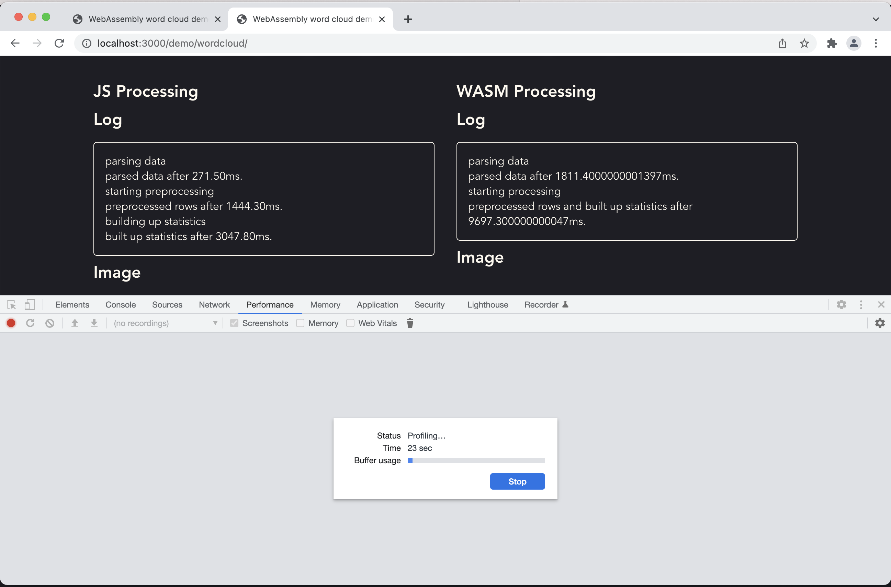
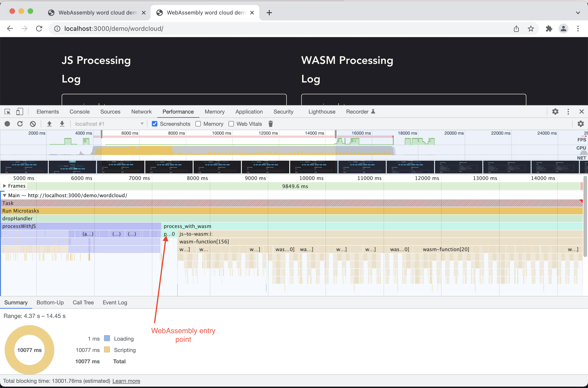
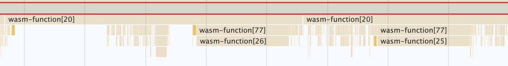
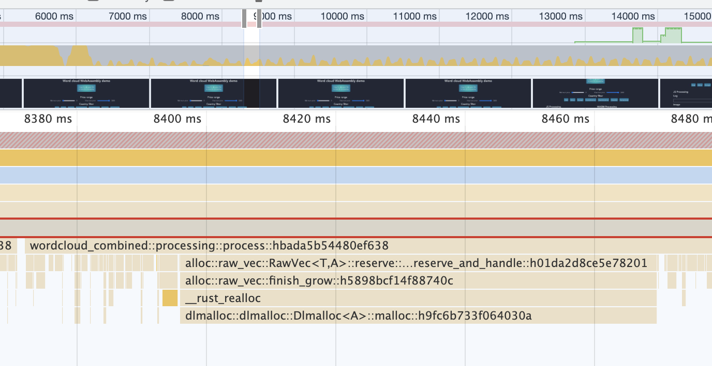
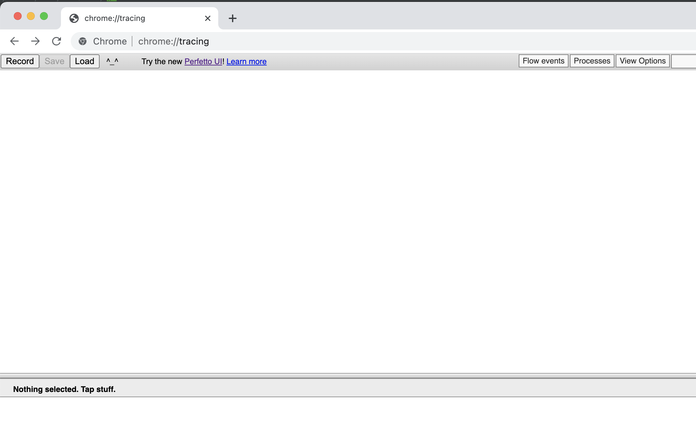
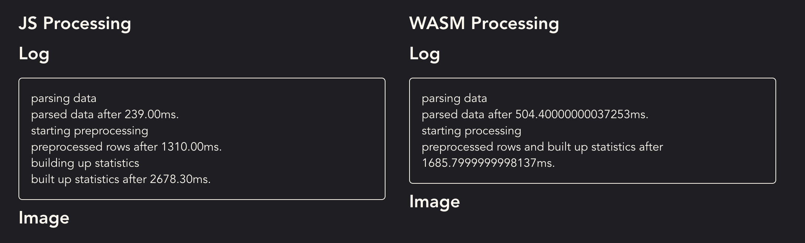

Showcase app
Take set of 150k wine reviews from Twitter and generate a word cloud from a subset of the reviews with the most relevant words

WebAssembly aims to execute at near-native speed
How can we make use of that?
Take set of 150k wine reviews from Twitter and generate a word cloud from a subset of the reviews with the most relevant words
We don't want the most frequent but the most relevant words
For our example we use TF-IDF
TF-IDF value for a word = TF * IDF
Frequency of the word offset by how rare it isIn our case a good measure to filter out common words like 'is', 'the', 'wine', etc.
Let's try to speed it up!
Create a WebAssembly module that can generate exactly the same word cloud
Use
Processing function
#[wasm_bindgen]
pub fn process_with_wasm(text: &str) {
processing::process(text)
}
Word cloud function
Returns the most relevant words with an importance score
#[wasm_bindgen]
pub fn analyze_sample_with_wasm(min_price: u16,
max_price: u16,
countries: JsValue
) -> JsValue {
let countries: Vec<String> = countries.into_serde()
.unwrap();
JsValue::from_serde(&processing::analyze_sample(
min_price, max_price, &countries,
))
.unwrap()
}
#[wasm_bindgen]
pub fn analyze_sample_with_wasm(min_price: u16,
max_price: u16,
countries: JsValue
) -> JsValue { ... }
Non-primitive values (objects/structs, lists of objects) can be passed as JSValue through JSON marshalling
What is happening in Chrome?
How to profile our code?
Use dev tools (performance tab)
Use dev tools (performance tab)
wasm runs slower when dev tools are open - except when profiling in performance tab!
Find relevant function call
Not very readable unfortunately
Include debug symbols and disable optimizations in the wasm build
[profile.release]
opt-level = 3
lto = true
debug = true
[package.metadata.wasm-pack.profile.release]
wasm-opt = false
[package.metadata.wasm-pack.profile.release.wasm-bindgen]
debug-js-glue = true
demangle-name-section = true
dwarf-debug-info = true
These options are input language (and toolchain) specific
Include debug symbols and disable optimizations in the wasm build
[profile.release]
opt-level = 3
lto = true
debug = true
[package.metadata.wasm-pack.profile.release]
wasm-opt = false
[package.metadata.wasm-pack.profile.release.wasm-bindgen]
debug-js-glue = true
demangle-name-section = true
dwarf-debug-info = true
A build like this will both be larger and slower typically
Now we have a readable profiling session!
Zooming in, memory allocations seem to dominate
working in low level languages makes it possible to control when memory is allocated to some extent
let corpus_word_map = HashMap::with_capacity(100_000);
Making sure that the hash map does not need to grow when inserting the elements
Let's use another tool - chrome://tracing
Large number of wasm.GrowMemory operations
let's try to minimize the number of grow operations
pub fn process(text: &str, start_time: f64) {
let buffer: Vec<u8> = Vec::with_capacity(200_000_000);
drop(buffer);
...
}
In a real application this number wouldn't be constant
Success!
